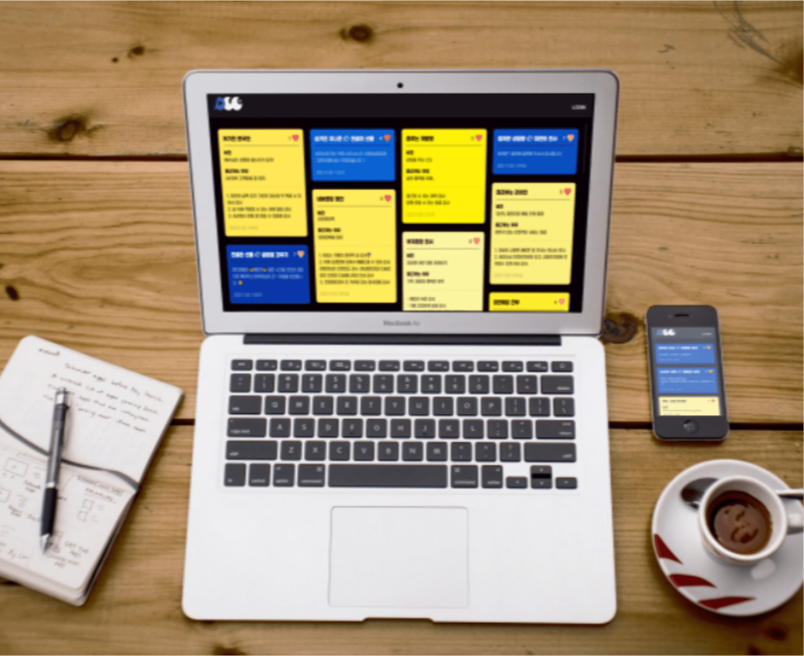

빠르게 성장하는
WEB/APP 기획자
빠른 상황 파악과 활발한 소통을 통한 성공적인 프로젝트를 이끌겠습니다.
-
다양한 이슈해결과 프로젝트 경험
국내 기획자 인턴 기간 동안 국내 서비스들 Web/App 기획 업무를 맡아 고객지원팀, 개발팀과의 협업을 통해 유지 보수를 주로 하였으며 이벤트나 업데이트 시, 공지사항 작성 및 배너&이미지를 기획하였습니다. 또한 사내 문화 서비스 프로젝트에서 기획자 역할을 맡아 화면 설계 및 기획서 작성 엄무를 맡았었습니다. 그리고 국내 서비스 중 수업용 프로그램 업그레이드 기획을 맡아 분석, 벤치마킹을 통해 화면 설계 및 기획서 작성 업무를 맡았었습니다. 기타 업무로 공지사항 작성, 워드프레스 관리, 테스터 등의 업무를 경험하였습니다.
-
프로세스를 토대로 팀원들과의 협업
문제를 파악하고 다양한 리서치를 통해 분석하고 설계할 것이며 그로 인해 최선의 방법으로 문제 해결을 할 수 있도록 제안할 것입니다. 낯선 사람들과의 협업에서도 그동안의 교사 및 인턴의 경험들과 저의 밝은 에너지로 먼저 다가가 상호작용할 것이며 팀원들과의 원활한 커뮤니티를 통해 협업을 하며 일 할 것입니다.
-
다양한 문서경험 및 웹디자인 공부로 인한 무궁무진한 가능성
인턴 기간 중에 주 업무가 국내 서비스들(약 6개)의 유지 보수였으며 다양한 이슈들을 다양한 해결 방법으로 해결해오면서 문제해결능력이 더 키워질 수 있었습니다. 또한 저의 적극적인 성격과 긍정적인 에너지로 인해 팀원들과도 금방 가까워질 수 있어 협업을 할 때 상호작용도 많이 이끌어 낼 수 있었습니다. 때문에 회사의 일원이 된다면 어떠한 이슈에도 포기하지 않고 더 좋은 서비스를 위해 기획하는 기획자, 팀원들과의 활발한 상호작용을 통하여 결과를 이끌어내는 기획자가 될 가능성이 충분하다고 생각합니다.
청취닷컴
국내서비스 기획자 인턴
고객지원팀과 개발팀과의 협업을 통해 국내서비스를 운영 및 고도화, 새로운 서비스를 기획했습니다.
-
다양한 이슈해결
국내 영어교육 서비스 6가지의 유지보수를 맡아 다양한 이슈상황을 해결해나아가며 실력을 키울 수 있었고 고객지원팀, 개발팀과의 협업을 경험하였습니다.
-
프로젝트 경험
정기적으로 국내 서비스에 대한 고객 및 직원들의 건의사항을 수렴하여 서비스를 업그레이드를 프로젝트 프로세스로 진행 하였습니다.
-
사내문화 서비스 기획
기존의 오프라인 사내문화를 온라인 서비스로 새로이 기획 및 테스트를 맡았고 현제 실서비스 오픈하였습니다.
-
영어교육용 프로그램 업그레이드 기획
업그레이드를 위해 리서치 방법으로 시장조사 및 밴치 마킹, 직접 조작 등을 하며 분석하여 UX 설계단계에서 메인, 학습화면 설계까지 참여하였습니다.
-
이벤트 및 공지사항 작성
이벤트에 따라 홈페이지 베너, 카카오체널 카드 이미지 등을 기획하여 디자이너분과 협업하여 작업하엿습니다. 또한 서비스에 관한 공지사항이 필요시 작성하여 게시하였습니다.
Process:
분석
설계
디자인
개발
테스트
오픈
다양한 리서치 방법을 시도하여 분석하고 팀원들과의 활발한 상호작용을 통해 프로젝트를 이끌어 가겠습니다.
-
분석
-
시장조사
-
서비스 구축범위
-
설계
-
구현진척률
-
기능정의서
-
화면설계
-
디자인
-
개발
-
미결사항정의서
-
테스트
-
테스트 시나리오&기록
-
오픈
프로젝트: playchungchy
기간: 2021. 08. ~2021. 12.
사용툴:powerpoint, spreadsheet, axure
-
기대효과: 사내문화 활성화 / 성과
기존에 사내문화인 감사, 칭찬카드 작성 문화를 온라인 서비스로 생성하면 사용성을 높여 사내문화를 활성화 하는 것이 목표입니다.
- 오프라인에서 온라인 서비스로 변환하니 참여빈도수가 증가됨.
- 팀과 팀 사이의 교류가 어려웠는데 온라인 서비스로 다른팀과의 교류가 쉬워짐.
- 서로의 일상, 감정등을 작성한 글을 공감하는 버튼을 둠으로써 교류감을 느낄 수 있고 오프라인 상호작용도 증가함. -
컨셉1: 쉽고 간단한 UI
한 화면에 주요 기능(칭찬, 감사, 일정, 공지)을 확인할 수 있으며 사용자가 편리함을 느낄 수 있도록 컬러를 선정, 기존 서비스와 유사한 작성 폼으로 친근함을 느낄 수 있도록 설계하였습니다.
-
컨셉2:소통과 공유에 용이한 환경
커뮤니케이션에서 중요한 상호작용이 빠르고 원활하게 진행될 수 있도록 실시간 업데이트 기능을 적용하였고 칭찬, 감사 게시글에 공감 버튼 기능을 통해 쉽게 서로 소통하는 환경을 구축하였으며 눈의 피로감과 주 기능인 감사와 칭찬의 내용이 강조되도록 배경색을 검정으로 선정하여 구현하였습니다.